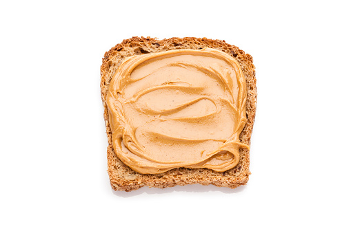

Peanut Butter and Marmite Toastie

Description
Simply put this is the best snack in the world. It ticks most of the important boxes that a snack should: Vegan, Quick & Extra Filling
(For a sweeter version of this snack, you can replace marmite with mashed banana!)
Ingredients
- Bread
- Peanut butter
- Marmite
Instructions
- Toast two slices of bread
- Once toasted add peanut butter to one slice, and marmite to the other.
- Put the two pieces of toast together, so the marmite and peanut butter are facing towards each other (very important!)
Return to main menu